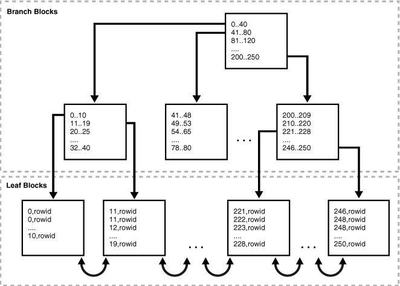

SQL
Behind the curtains
Topics:
- What is a query
- SQL Processing
- Indexes
- Execution Cost
- Execution Plans
- Statistics;
What is a query?
- SQL instruction that retrieves data based on specific criteria...
- ...in a
declarative form
Examples:
SELECT * FROM users;
SELECT prod.name, COUNT(sod.*)
FROM production.product prod
LEFT OUTER JOIN sales.salesorderdetail sod
ON prod.productid = sod.productid
WHERE prod.name LIKE 'W%'
GROUP BY prod.name
HAVING COUNT(sod.*) > 100
ORDER BY 2 DESC, 1;
You don't say how the database will read the data, just what data will be read.
Parsing/Running

Credits: Oracle.
Optimization
To find the best way to read the requested data, the optimizer uses several tools, like:
- Query transformation
- Access Paths
- Indexes
- Statistics
- Hints(*)
(*) not available on all dbs
Query Transformation:
- Changes the query structure to make it more efficient
- Modifies things like Join order, Boolean operators, and so on.
Access Paths:
- Evaluates the possibles access paths to the requested data (indexes)
Indexes
- Storage structure for parts of data to improve access times to records
- Most of the time contains one or a few of the table columns
- Usually ignored when:
- Small dataset
- Query reads large percentage of data
- Most common data structure: B-Tree
Indexes
Cost
- Estimated measure of how 'hard' is to read the data
- Based on things like memory usage, CPU usage and I/O
- (as it is estimated, the numbers may vary)
Statistics
- Used to evaluate how many records the query will manipulate
- Two basic measures: Selectivity and Cardinality
- Generally automatically collected by database processes (but can be manually run)
Execution Plan
- Based on Cost and Statistics, the instance defines some execution plans
- The lowest overall cost is usually elected and used
- The selected plan is cached and reused if necessary
- But beware: the selected plan is not always the best plan
Examples
Execution Plan
development=# EXPLAIN ANALYZE SELECT * FROM T WHERE ID < 10000;
QUERY PLAN
----------------------------------------------------------------------------------------------------
Seq Scan on t (cost=0.00..1693.00 rows=9940 width=6) (actual time=0.008..7.917 rows=9999 loops=1)
Filter: (id < 10000) Rows
Removed by Filter: 90001
Planning time: 0.044 ms
Execution time: 8.454 ms (5 rows)
Execution Plan
CREATE UNIQUE INDEX ON T (ID);
EXPLAIN ANALYZE SELECT * FROM T WHERE ID < 10000;
QUERY PLAN
--------------------------------------------------------------------------------------------------------------------
Index Scan using t_id_idx on t (cost=0.29..334.24 rows=9940 width=6) (actual time=0.024..1.856 rows=9999 loops=1)
Index Cond: (id < 10000)
Planning time: 0.200 ms
Execution time: 2.444 ms (4 rows)
Execution Plan
EXPLAIN ANALYZE SELECT MAX(id) FROM t WHERE gender='F';
QUERY PLAN
-------------------------------------------------------------------------------------------------------------
Aggregate (cost=1818.16..1818.17 rows=1 width=4) (actual time=15.974..15.974 rows=1 loops=1)
-> Seq Scan on t (cost=0.00..1693.00 rows=50063 width=4) (actual time=0.012..11.808 rows=50058 loops=1)
Filter: ((gender)::text = 'F'::text)
Rows Removed by Filter: 49942
Planning time: 0.141 ms
Execution time: 15.995 ms (6 rows)
Execution Plan (Using Index)
CREATE INDEX ON t USING BRIN (gender);
EXPLAIN ANALYZE SELECT MAX(id) FROM t WHERE gender='F';
QUERY PLAN
------------------------------------------------------------------------------------------------------------------------------------
Aggregate (cost=1593.94..1593.95 rows=1 width=4) (actual time=17.712..17.712 rows=1 loops=1)
-> Bitmap Heap Scan on t (cost=399.99..1468.78 rows=50063 width=4) (actual time=0.069..13.439 rows=50058 loops=1)
Recheck Cond: ((gender)::text = 'F'::text)
Rows Removed by Index Recheck: 49942
Heap Blocks: lossy=443
-> Bitmap Index Scan on t_gender_idx (cost=0.00..387.48 rows=50063 width=0) (actual time=0.057..0.057 rows=5120 loops=1)
Index Cond: ((gender)::text = 'F'::text)
Planning time: 0.133 ms
Execution time: 17.754 ms (9 rows)
Execution Plan (Using Index)
CREATE UNIQUE INDEX ON t (id);
EXPLAIN ANALYZE SELECT MAX(id) FROM t WHERE gender='F';
QUERY PLAN
------------------------------------------------------------------------------------------------------------------------------------------
Result (cost=0.36..0.37 rows=1 width=0) (actual time=0.018..0.018 rows=1 loops=1)
InitPlan 1 (returns $0) -> Limit (cost=0.29..0.36 rows=1 width=4) (actual time=0.015..0.015 rows=1 loops=1)
-> Index Scan Backward using t_id_idx on t (cost=0.29..3550.29 rows=50063 width=4) (actual time=0.015..0.015 rows=1 loops=1)
Index Cond: (id IS NOT NULL)
Filter: ((gender)::text = 'F'::text)
Planning time: 0.177 ms
Execution time: 0.037 ms
Questions?
More information
Thank you
Leonardo Rota-Rossi
leo@weblers.net